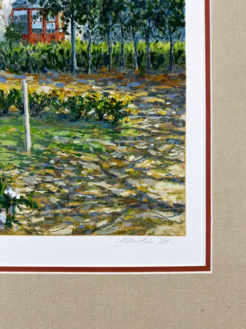
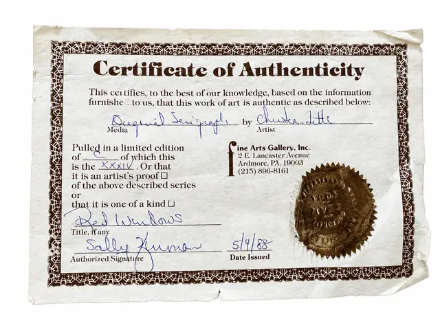

Paintings & Prints
Original Serigraph Garden Landscape, Pencil Signed, Certificate of Authenticity
Price Upon Request



About the Item
Garden landscape, original serigraph, pencil signed and titled in the lower margin. Published by Fine Arts Gallery, Inc., Ardmore, PA; certificate of authenticity affixed to the reverse. Framed with a burgundy and cream mat under glass.
Details
- Dimensions:
- Height: 32.0 in (81.28 cm)
Width: 34.5 in (87.63 cm)
outside of frame - Medium:
- Original Serigraph
- Condition:
- Offered in the condition shown in the photographs.
- Reference Number:
- VO-09
- Documentation:
- Certificate of Authenticity
- Gallery Location:
- Fine Arts Gallery, Inc., Ardmore, PA